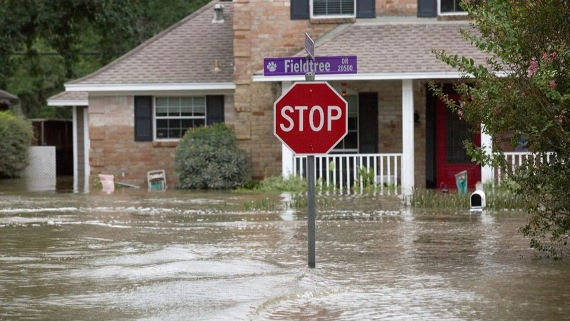

Cyclone en outre-mer : alertes Météo-France et bons réflexes
En outre-mer, Météo-France et les préfectures graduent la menace cyclonique par des niveaux d'alerte officiels (jaune, orange, rouge, violet et phase de sauvegarde). Dès l'annonce d'un phénomène, sécurisez votre habitation, vérifiez votre kit d'urgence 72 h et restez strictement confiné pendant l'alerte rouge ou violette.

L'essentiel
Ce qu’il faut savoir : En outre-mer, Météo-France et les préfectures graduent la menace cyclonique par des niveaux d'alerte officiels (jaune, orange, rouge, violet et phase de sauvegarde). Dès l'annonce d'un phénomène, sécurisez votre habitation, vérifiez votre kit d'urgence 72 h et restez strictement confiné pendant l'alerte rouge ou violette.
Ce qu’il faut faire
- Restez strictement confiné pendant l'alerte rouge ou violette.
- Abritez-vous dans la pièce la plus sûre du logement.
- Protégez les ouvertures et rentrez les objets extérieurs avant l'alerte.
- Suivez les consignes de la préfecture à la radio.
Ce qu’il ne faut pas faire
- Ne jamais sortir pendant l'accalmie de l'œil du cyclone.
- Ne pas circuler en alerte rouge ou violette.
- Ne pas traverser un cours d'eau ou une route submergée.
- Ne buvez l'eau du robinet que si les autorités confirment qu'elle reste potable ; suivez sinon leurs consignes sur l'eau embouteillée ou traitée.
Sources officielles : Météo-France (vigilance cyclonique outre-mer), Géorisques, préfectures d'outre-mer, SGDSN (Guide Tous responsables, 20/11/2025). Vérifié le 23 novembre 2026. Notre méthode
Les niveaux d'alerte cyclonique Météo-France outre-mer
Dans les départements et territoires d'outre-mer exposés (Antilles, La Réunion, Mayotte, Nouvelle-Calédonie, Polynésie française), la vigilance cyclonique repose sur un code couleur précis fixé avec les autorités préfectorales.
| Niveau | Situation | Conduite à tenir |
|---|---|---|
| Jaune | Menace cyclonique possible à plus de 24-48 h | S'informer, vérifier son kit 72 h et préparer l'habitation |
| Orange | Danger cyclonique probable dans les 24 h | Finaliser les protections, rentrer les objets extérieurs et limiter les déplacements |
| Rouge | Danger imminent (phénomène majeur en cours ou imminent) | Confinement strict à l'abri : interdiction de sortir et de circuler |
| Violet | Danger exceptionnel (vents cycloniques extrêmes) | Confinement absolu dans la pièce la plus sûre, y compris pour les secours |
| Gris (sauvegarde) | Phénomène éloigné mais dangers persistants (crues, câbles, éboulements) | Rester prudent, éviter les déplacements non indispensables et suivre les consignes |
Préparer la maison et son kit avant l'alerte rouge
Dès le passage en vigilance jaune puis orange, préparez votre logement et rassemblez vos réserves pour tenir au moins 72 heures sans eau courante ni électricité.
- Protéger les ouvertures : fermez et consolidez volets, persiennes et baies vitrées ; rentrez tout objet susceptible de devenir un projectile (mobilier de jardin, pots, tôles, outils).
- Anticiper l'eau et l'énergie : constituez des réserves d'eau potable et d'eau sanitaire, chargez téléphones et batteries, et vérifiez votre kit d'urgence 72 h et votre radio à piles.
- Identifier la pièce sûre : repérez une pièce intérieure sans fenêtre (couloir, salle d'eau centrale) pour vous réfugier au plus fort des rafales.
Pendant l'œil du cyclone et après le passage
Le passage de l'œil d'un cyclone crée une accalmie trompeuse : le vent reprend brutalement dans le sens opposé après quelques minutes ou dizaines de minutes.
- Ne sortez pas pendant l'accalmie : attendez l'annonce officielle de passage en phase de sauvegarde (vigilance grise) par la préfecture.
- Évitez les dangers après le passage : ne touchez jamais un fil électrique tombé à terre, ne traversez pas une route inondée ou un radier submergé et méfiez-vous des glissements de terrain.
- Surveillez l'eau et les aliments : consommez l'eau en bouteille jusqu'à confirmation officielle que l'eau du robinet est potable.
Informations pratiques, sources officielles (Météo-France (vigilance cyclonique outre-mer), Géorisques, préfectures d'outre-mer, SGDSN (Guide Tous responsables, 20/11/2025)). Elles ne remplacent pas les consignes des autorités. En cas d'urgence, appelez le 112 et suivez les consignes de la préfecture, de la radio et de FR-Alert.
Questions fréquentes
Quelle est la différence entre l'alerte rouge et l'alerte violette cyclonique ?
En alerte rouge, toute la population doit être confinée à l'abri. En alerte violette, les vents atteignent une intensité exceptionnelle imposant un confinement absolu dans la pièce la plus sûre ; les secours ne peuvent plus intervenir.
Peut-on sortir quand le vent s'arrête brusquement pendant un cyclone ?
Non. Cette accalmie correspond souvent au passage de l'œil du cyclone : des vents violents reprennent soudainement dans la direction opposée. Attendez la levée officielle du confinement.
À quoi correspond la vigilance grise (phase de sauvegarde) ?
Elle signifie que le cœur du cyclone s'éloigne, mais que des risques importants subsistent (inondations, chutes d'arbres, câbles électriques au sol, routes coupées). Il faut limiter ses déplacements et rester vigilant.
Où suivre les bulletins cycloniques officiels en outre-mer ?
Sur le site vigilance.meteofrance.fr, les canaux de votre préfecture ou haut-commissariat, ainsi que sur les radios locales.
À lire aussi


 Kit de survie 72 h : la listeListe complète du kit d’urgence 72h du gouvernement : eau, nourriture, radio, trousse… Version claire + checklist interactive gratuite adaptée à votre foyer.
Kit de survie 72 h : la listeListe complète du kit d’urgence 72h du gouvernement : eau, nourriture, radio, trousse… Version claire + checklist interactive gratuite adaptée à votre foyer.